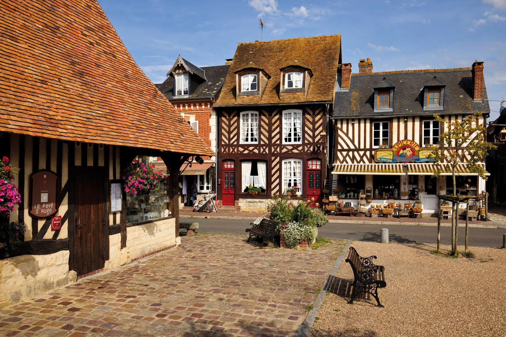

Le lendemain d'une soirée bien ordinaire, tu te retrouve réincarné dans le corps d'un jeunne homme franc alors que celui ci se fait conscrire en tant que fantassin afin de défendre la cité de l'envahisseur viking. Tu ne sais pas pourquoi ou comment tu t'est retrouvé ici cependant une chose est claire, ton objectif est de survivre.